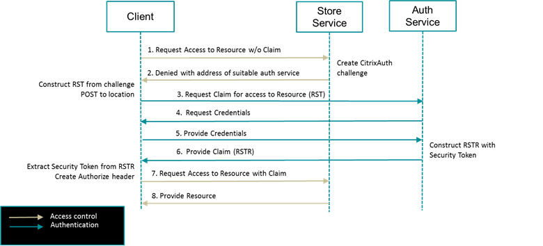
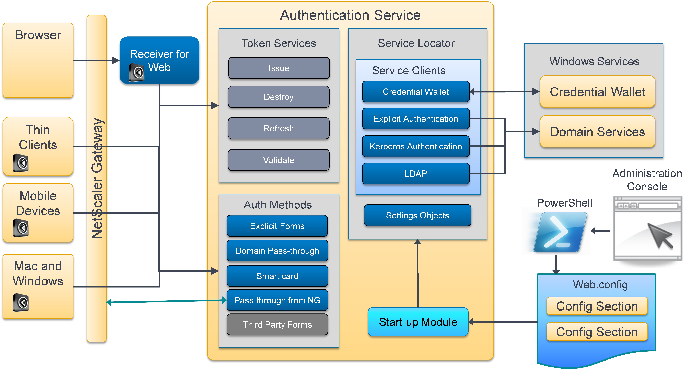
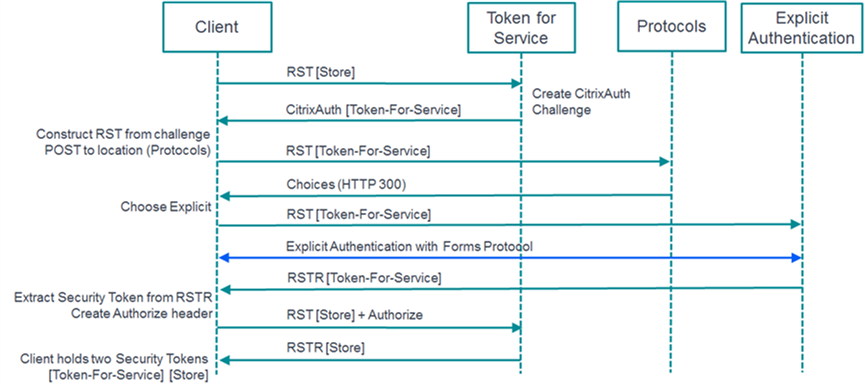

Authentication Software Development Kit
1. Introduction
1.1 Scope
This document describes the StoreFront Services v2.6 Authentication Software Development Kit. It describes how to use the SDK to develop new custom forms-based authentication methods, or new authentication protocols. This document also describes how the customizations can be delivered and deployed on existing servers running StoreFront Services v2.6.
The SDK requires a working knowledge of the Microsoft .NET Framework (http://msdn.microsoft.com/en-US/vstudio/aa496123 ) and in particular the C# programming language (http://msdn.microsoft.com/en-us/library/vstudio/z1zx9t92(v=vs.100).aspx ).
1.2 Deliverables
This SDK contains the following deliverables, packaged into a single compressed archive:
- Assemblies: The external and StoreFront assemblies referenced by the samples, including any associated xml documentation files
- Documentation: This document and its supporting documentation
- Installers: Pre-built installers for the samples
- Merge: Files used by the sample unittests
- Tools: The tools used to build the samples and run the unit tests
- Magic Word Sample: A simple authentication form that demonstrates a full implementation
- Test Forms: A sample to demonstrate the use of User Interface Elements in a series of custom forms
- CertificateIdentityDeclaration: A sample to illustrate a new authentication protocol
The samples contain Visual Studio 2012 solutions, C# source code that builds msi installers that can be used to deploy the sample to a StoreFront 2.6 deployment. The samples also contain unit tests focussed around testing the form implementation, or the authentication protocol.
1.2.1 PREREQUISITES
The following prerequisites are required, installed in the following order:
-
Visual Studio (2012 or later)
- On Windows Server 2012 and later .NET 3.5 SP1 will need to be installed in order to be able to target .Net 3.5 SP1 as required for some project types.
- To run the unit tests, the NUnit Test Adapter for Visual Studio 2012 and 2013 is required. See the following for installation and usage instructions: http://nunit.org/index.php?p=vsTestAdapter&r=2.6.2
-
Wix v3.6.3303.0: http://wix.codeplex.com/releases/view/93929
1.3 References
[1] RFC 2617 HTTP Authentication: Basic and Digest Access Authentication: http://tools.ietf.org/html/rfc2617
[2] CitrixAuth Authentication Scheme v2.0
[3] Security Token Services API v2.0
[4] Citrix Receiver Common Authentication Forms Language v2.6
[5] ASP.Net MVC 4: http://www.asp.net/mvc/mvc4
[6] The Service Locator Pattern: http://msdn.microsoft.com/en-us/library/ff648968.aspx
[7] Authenticode: http://msdn.microsoft.com/en-us/library/ms537359(v=vs.85).aspx
[8] Time Stamping Authenticode Signatures: http://msdn.microsoft.com/en-us/library/windows/desktop/bb931395(v=vs.85).aspx
[9] StoreFront Authentication Form Generation v2.6
2 StoreFront Services Authentication Overview
2.1 Identity Management Systems
Traditional systems have centralized identity management systems where each application is responsible for authenticating the user and establishing their identity. This has led to multiple implementations of authentication and authorization systems and applications with differing levels of support for different authentication methods. In federated systems the user authenticates once, to an appropriate authentication service, which gathers information about the user. This information often takes the form of assertions or claims regarding the user. The claims are then marshalled to other applications or services that rely on the authentication service. These "relying parties" have been configured to trust the assertions/claims issued by the authentication service, or "trusted issuer" and this is commonly enforced by strong cryptographic means such as digital signing and encipherment. The assertions/claims are marshalled as security tokens that are issued by the trusted issuer, held by the application, and presented to other services to gain access to data and services. 
2.2 The Authentication Service
The StoreFront Authentication Service is a web application, hosted in IIS, which makes extensive use of the ASP.NET MVC Framework 4.0 [5]. The service is usually hosted at the relative URL: /Citrix/Authentication of the chosen IIS web site. HTTP requests are routed by IIS, ASP.NET and the MVC framework to Controllers for processing.
New authentication methods are added by adding new ASP.NET Routes into the web application and mapping them to new Controllers. For forms based authentication, the forms are rendered using a custom mechanism based on ASP.Net Razor templates [9]. Configuration data is stored in the associated web.config file. When the web application starts, a configured set of start-up modules are run, which parse the configuration into settings objects that are stored in a Service Locator [6], along with other long-lived objects.

The StoreFront Administration Console utilizes a PowerShell layer to configure the solution. The PowerShell layer makes extensive use of a custom configuration provider that allows certain portions of the web.config file to be accessed as if it were a mounted drive; see Section 3.4.3. This simplifies accessing the configuration data using standard PowerShell commands.
2.3 Authentication Support Services
In addition to the Authentication web application, there are additional Windows services that provide functionality requiring higher levels of privilege. The Authentication web application communicates with these WCF services utilizing named pipes for the communication channel. Access to these services is controlled through membership of local Windows groups.
Credential Wallet The Credential Wallet is a WCF service hosted in a Windows service called Citrix Credential Wallet, or its localized variant. The hosted Credential Wallet service is an in-memory hash table that securely stores encrypted passwords. The samples demonstrate how to store passwords in the Credential Wallet by utilizing the existing functionality in one of the specialized claims.
Domain Services The Domain Services host WCF services that provide the functionality to authenticate a user by using explicit credentials (user name and password), or utilizing Kerberos Service-for-User for both user principal names and certificates.
The default is to create one Domain Services called Citrix Default Domain Services, or the localized variant, which provides authentication and LDAP services for the domain that the server is currently a member of, or an associated trust scope. The samples demonstrate how to delegate credential validation to the most appropriate service described above.
2.4 Relying Party Authentication: CitrixAuth
As described above, a relying party, such as the Store service, can challenge for authentication at any point. This challenge takes the form of an RFC2617 [1] extension. It uses the standard HTTP WWW-Authenticate header for the challenge and the Authorization HTTP header as the response. Further information can be found in the CitrixAuth Scheme document [2].
When a client receives a challenge, it must respond by constructing and sending a Request Security Token (RST) to the location specified in the challenge. The details of how to construct the RST can be found in the CitrixAuth Authentication Scheme document [2]. The client should expect to receive a Request Security Token Response (RSTR) message in response to the RST message. The location to which the RST is sent, will be the Token Issuing Service. The RSTR that is returned will contain the security token that can be used to access the required resource in the response to the challenge, plus additional information to assist the client with caching the token. For more information on the endpoints and expected messages, see the Security Token Services API document [3].
2.5 Primary Authentication
The Token Issuing Service is itself a relying party that issues challenges if an appropriate security token is not present. The location associated with the challenge is the protocol choices endpoint that allows a negotiation between the client and the authentication service regarding which authentication method should be used.

The following protocols are supported in this version: - User name and password: A user is required to explicitly provide their domain-qualified user name and password
- Domain pass-through: Use the desktop session credentials to authenticate
- Smart card: Smart card authentication
- Http Basic: This is used by third-party client integrations and web portals, where an external user interface has been used to capture a domain-qualified user name and password
- Pass-through from Citrix Access Gateway: This allows single sign-on from Citrix NetScaler Gateway
- Citrix Federation: This is an internal authentication mechanism to StoreFront
The “User name and password” authentication method shares a common mechanism with Access Gateway to render a form for the collection of user credentials. Further details can be found in the Common Authentication Forms Language document [4].
2.6 Common Forms
The samples illustrate developing custom forms-based protocols that are based on the Common Authentication Forms Language. The flow of forms and responses constitutes a conversation that can have state associated with the overall conversation. For maximum interoperability, the protocol is a REST API (XML Forms transmitted over HTTPS) and is described in [4].
In this version of the SDK, a new protocol identifier is defined: CustomForms. The clients are required to recognize this protocol identifier and map it to their existing Common Forms rendering. Clients will give preference to this new protocol over the existing ExplicitForms protocol, should both be available. The expectation is that any organization will only implement, or purchase, a single custom authentication mechanism for their organization, so multiple vendors advertising their customizations in this way should not be an issue.
2.7 Delegated Forms Authentication
In order to extend the reach of any customization to include NetScaler Gateway, Citrix has defined a protocol for delegating forms authentication to a customized StoreFront deployment. In this release, the StoreFront Authentication Service provides an endpoint for NetScaler to delegate the rendering and handling of forms authentication to StoreFront.
It is possible to configure the Delegated Forms Server to use customized forms conversations created with this SDK, allowing both internal and external clients to share the customized experience. In this release, the delegated forms functionality is configured from PowerShell only. A description of the high-level commands can be found in the document installed on the StoreFront server at the following location: %PROGRAMFILES%\Citrix\Receiver StoreFront\Management\Cmdlets\DFAServerFPReadMe.rtf It is expected that the PowerShell required to configure the delegated forms to use the specific customization shall be wrapped in a simple PowerShell command by the customization author and provided as part of the customization.
3 StoreFront Management Overview
The deployment and management of StoreFront is based around PowerShell and a Microsoft Management Console (MMC) snap-in that orchestrates the PowerShell commands. The following sections describe where management data is stored and managed.
3.1 Registry
The Windows registry is used to store the following information:
Key: HKLM\SOFTWARE\Citrix\DeliveryServices
Values
- AdminConsoleOperationMode: This controls the operational mode of the StoreFront Administration Console
- CertificateStoreName: The name of the private machine certificate store used by StoreFront
- ClockSkew: The amount of clock skew allowed when comparing validity periods for authentication tokens
- ConfigurationLevel: This value is used to compare two servers when replicating data
- FrameworkControllerAssemblyPath: The path of an assembly that implements the StoreFront framework controller
- FrameworkControllerType: The type of the class that implements the framework controller in the assembly at: FrameworkControllerAssemblyPath
- IISAssemblyPath: The path of an assembly that implements the IIS manager
- IISManagerType: The type of the class that implements the IIS manager in the assembly at: IISAssemblyPath
- InstallDir: The path where StoreFront is installed, which is usually: %PROGRAMFILES%\Citrix\Receiver StoreFront
- WindowsInstallerAssemblyPath: The path of an assembly that implements the StoreFront Windows installer functionality
- WindowsInstallerType: The type of the class that implements the Windows installer functionality in the assembly at: WindowsInstallerAssemblyPath
Key: HKLM\SOFTWARE\Citrix\DeliveryServices\FrameworkControllerData
Values - DirectoryPath: The path to the directory that stores the StoreFront framework controller data
Key: HKLM\SOFTWARE\Citrix\DeliveryServicesManagement
Values
- AdminMscFileLocation: The StoreFront Management Console snap-in configuration file
- InstallDir: The StoreFront management installation directory, which is usually: %PROGRAMFILES%\Citrix\Receiver StoreFront\Management
The following key contains sub-keys that control the scope nodes in the StoreFront Administration Console (see Section 3.5):
HKLM\SOFTWARE\Citrix\DeliveryServicesManagement\Plugins
Each key can contain the following values:
- IsEnabled: This controls whether the associated scope node is displayed
- IsFirstUsePlugin: Determines whether the associated node participates in the First-Time Use experience
- OrderingHint: This controls the order in which the scope nodes are displayed in the StoreFront Administration Console
- Parent: This specifies the parent of the associated scope node
The Windows registry is also used by the Authentication SDK. The following key contains two sub-keys: Extensions and ViewExtensions: HKLM\SOFTWARE\Citrix\DeliveryServicesManagement\Plugins\Authentication Every authentication method should add a sub-key to the Extensions key, with a default value that specifies the assembly that contains the implementation of the Authentication SDK management plug-in as described in Section 3.5. If an authentication method has configuration actions, then it should also add a sub-key to the ViewExtensions key, with a default value that specifies the assembly that contains the implementation of the Authentication SDK view extension as described in Section 3.5.3. The assemblies described above should be located at the path specified by the InstallDir value of the key: HKLM\SOFTWARE\Citrix\DeliveryServicesManagement.
3.2 Framework Controller Data
The StoreFront framework controller data for this release is stored in an XML file at the path specified by the DirectoryPath value of the key: HKLM\SOFTWARE\Citrix\DeliveryServices\FrameworkControllerData.
This file contains the information about which features are currently deployed, including Windows Services, web applications etc, and is used by the StoreFront Framework controller for deployment management. The data stored here is managed by the PowerShell API and should not be manually updated.
3.3 Configuration Data
Most of the configuration data for individual StoreFront components is stored in the web.config file of the associated web application, or in the application.config file for Windows services.
These configuration settings are managed by the StoreFront Configuration Provider (see Section 3.4.3) . In order for the configuration provider to read and write the settings a configuration section is required; see: http://msdn.microsoft.com/en-us/library/vstudio/2tw134k3(v=vs.100).aspx.
3.3.1 SERVICE LOCATOR
The basic idea behind a service locator is to have an object that knows how to get hold of all of the services that an application might need. StoreFront makes extensive use of service location and inversion-of-control (IoC) containers; see http://martinfowler.com/articles/injection.html for more details of this software pattern.For the StoreFront services to access the configuration data the following procedure is often followed: 1.Create a configuration section. 2.Create a simple data class that holds all the required settings. 3.Create a parser class that takes a configuration sections and creates a settings data object. 4.Create a start-up module that uses the parser to create an instance of the settings object in the service locator. 5.Obtain access to the settings objects, where required, through the service locator.
3.3.2 START-UP MODULES
A start-up module for a web application is a class that implements the following interface:
namespace Citrix.DeliveryServices.Mvc
{
/// <summary>
/// Interface implemented by modules for executing code during the
/// application startup.
/// </summary>
public interface IStartupModule
{
/// <summary>
/// The Initialize method of each registered component is called
/// at application startup (MvcCoreWebApplication).
/// Throwing an exception stop the application startup.
/// </summary>
void Initialize();
/// <summary>
/// Registers components (put all registration here unless a component
/// requires registering before/after other components).
/// </summary>
void RegisterComponents();
/// <summary>
/// Registers components (pre call to allow for components that must
/// be registered first).
/// </summary>
void PreRegisterComponents();
/// <summary>
/// Registers components (pre call to allow for components that must
/// be registered last, don't use unless required).
/// </summary>
void PostRegisterComponents();
}
}This interface is defined in the assembly: AuthSDK.zip/Assemblies/StoreFront/ Citrix.DeliveryServices.Mvc.dll. Start-up modules are registered with the service locator through the configuration in the configuration file. The following illustrates registering the forms protocol start-up module:
<configuration>
<container>
<components>
<component id="formsProtocolStartupModule"
type="Citrix.DeliveryServices.Authentication.
FormsProtocol.Startup.FormsProtocolStartupModule,
Citrix.DeliveryServices.Authentication.FormsProtocol"
service="Citrix.DeliveryServices.Mvc.IStartupModule,
Citrix.DeliveryServices.Mvc" />
</components>
</container>
<citrix.deliveryservices>
</citrix.deliveryservices>
</configuration>During the start-up of the web application, all the start-up modules are discovered. The Initialize() is called first on all the modules, followed by: PreRegisterComponents(), then RegisterComponents(), and finally PostRegisterComponents(). During an appropriate phase, settings and other objects can be added to the IoC container. See the samples for examples of how start-up modules are created and used.
3.4 PowerShell Scripting
The StoreFront Administration Console internally uses PowerShell to perform its tasks, and administrators can use the PowerShell commands directly from a PowerShell command window or in scripts. The PowerShell support is divided into three parts: utility scripts, PowerShell modules, and the StoreFront configuration provider.
3.4.1 UTILITY SCRIPTS
The StoreFront utility scripts can be found at:
%PROGRAMFILES%\Citrix\Receiver StoreFront\Scripts
The scripts include: - ImportModules.ps1: This performs the following tasks, to facilitate calling the StoreFront PowerShell API - Adds all registered PowerShell snap-ins, with names matching the pattern: Citrix.DeliveryServices., except for the StoreFront Configuration Provider - Adds all PowerShell modules (.psm1) found in the directory specified by the InstallDir value of the registry key: HKLM:\SOFTWARE\Citrix\DeliveryServicesManagement - ClearUp_1.ps1: This removes all the StoreFront Feature instances, and can be used to cleanup after a failed uninstall of StoreFront - ClearUp_2.ps1: This removes all the StoreFront Feature classes, and must be called after ClearUp_1. After successfully running ClearUp_1 and ClearUp_2, StoreFront can be uninstalled using the Add/Remove Programs.
3.4.2 POWERSHELL MODULES
The StoreFront PowerShell modules can be found at:
%PROGRAMFILES%\Citrix\Receiver StoreFront\Management\Cmdlets
The commands relating to authentication are in the AuthenticationModule.psm1 module, and include the following:
- Get-DSAuthenticationProtocolsAvailable: Get the current list of available authentication protocols.
- Get-DSAuthenticationProtocolsDeployed: Get the list of protocols deployed for the Authentication service, specified by the IIS site identifier and virtual path of the associated web application.
- Set-DSAuthenticationProtocolsDeployed: Update the protocols deployed for the Authentication service, specified by the IIS site identifier and virtual path of the associated web application. The required protocols are specified in a list. Protocols not currently deployed are added, and protocols that are currently deployed but not included in the list are removed.
- Add-DSAuthenticationProtocolsDeployed: Add the specified list of protocols to the Authentication service, specified by the IIS site identifier and virtual path of the associated web application.
- Remove-DSAuthenticationProtocolsDeployed: Remove the specified list of protocols from the Authentication service, specified by the IIS site identifier and virtual path of the associated web application.
Full help for the commands can be obtained using the standard Get-Help command as described here: http://technet.microsoft.com/en-us/library/ee176848.aspx.
3.4.3 STOREFRONT CONFIGURATION PROVIDER
The actual getting and setting of configuration properties is achieved using the StoreFront Configuration Provider. The provider exposes parts of configuration files as hierarchical namespaces, in the same way that file systems are hierarchical namespaces, comprised of directories that contain files and other directories. This is available for all web.config and service.config files. In general examples of how to modify the configuration settings can be found in the StoreFront PowerShell modules described in Section 3.4.2 Alternatively a namespace can be opened and browsed, as described below, to find appropriate settings.
The five steps in using the StoreFront Configuration Provider are:
1 Open a web application configuration file
The following illustrates how to open a drive for the authentication service in the default tenant:
# Load the StoreFront snap-ins and modules
& "$Env:PROGRAMFILES\Citrix\Receiver StoreFront\Scripts\ImportModules.ps1"
# Get the authentication service web app for the default tenant
$authWebApp = Get-DSAuthenticationServiceWebApp
# Get the configuration for the web app
$appPath = GetAppPathWeb -SiteId $authWebApp.SiteId `
–VirtualPath $authWebApp.VirtualPath -Name "DSAuth"
$appConfig = Get-Item $appPath
cd $appPath2 Open a Windows service configuration file
Configuring Windows services is unlikely to be necessary. However, if required, then the site name is needed to identify the service to be configured. The following site names are valid for the specified Windows service name: - Citrix Credential Wallet: CredentialWallet - Citrix Subscriptions Store: SubscriptionsStoreService - Citrix Default Domain Services: DefaultDomainService - Citrix Peer Resolution Service: PNRS - Citrix StoreFront Protocol Transition: ProtocolTransitionService
The following illustrates how to open a drive for the Credential Wallet.
# Load the StoreFront snap-ins and modules
& "$Env:PROGRAMFILES\Citrix\Receiver StoreFront\Scripts\ImportModules.ps1"
$driveName = "CW"
$siteName = "CredentialWallet"
$cwDrive = GetAppPath -AppPath $siteName -Name $driveName
$cwAppConfig = Get-Item $cwDrive
cd $cwDrive3 Access data
The majority of the settings are in the /DeliveryServices namespace, which can be navigated and explored using the standard dir, or ls alias. For example, the following enumerates all the namespaces in a default authentication service:
PS DSAuth:\DeliveryServices> ls | select { $_.PSPath }
$_.PSPath
-----------
DeliveryServices::DSAuth:\DeliveryServices\explicitAuthentication
DeliveryServices::DSAuth:\DeliveryServices\citrixFederationAuthentication
DeliveryServices::DSAuth:\DeliveryServices\formsProtocol
DeliveryServices::DSAuth:\DeliveryServices\authentication
DeliveryServices::DSAuth:\DeliveryServices\routing
DeliveryServices::DSAuth:\DeliveryServices\delegatedKerberosAuthentication
DeliveryServices::DSAuth:\DeliveryServices\defaultRoutes
DeliveryServices::DSAuth:\DeliveryServices\explicitBL
DeliveryServices::DSAuth:\DeliveryServices\delegatedExplicitAuthentication
DeliveryServices::DSAuth:\DeliveryServices\commonExplicitEndpoints
DeliveryServices::DSAuth:\DeliveryServices\certificateManager
DeliveryServices::DSAuth:\DeliveryServices\authenticationService
DeliveryServices::DSAuth:\DeliveryServices\cryptography
DeliveryServices::DSAuth:\DeliveryServices\tokenManager
DeliveryServices::DSAuth:\DeliveryServices\windowsEventLogger
DeliveryServices::DSAuth:\DeliveryServices\logger
DeliveryServices::DSAuth:\DeliveryServices\credentialWalletClient
DeliveryServices::DSAuth:\DeliveryServices\delegatedDirectoryClaimFactory
DeliveryServices::DSAuth:\DeliveryServices\localisationThe standard Get-Item and Get-ItemProperty commands can be used to access the properties. For example, the following illustrates displaying the explicit business logic settings:
PS DSAuth:\DeliveryServices> Get-ItemProperty DSAuth:\DeliveryServices\explicitBL
PSPath : DeliveryServices::DSAuth:\DeliveryServices\explicitBL
PSParentPath : DeliveryServices::DSAuth:\DeliveryServices
PSChildName : explicitBL
PSDrive : DSAuth
PSProvider : DeliveryServices
AuthenticatorName : defaultDelegatedAuthenticator
RequireAccountSIDs : True
HideDomainField : True
AllowUserPasswordChange : Never
ShowPasswordExpiryWarning : Windows
PasswordExpiryWarningPeriod : 10
AllowZeroLengthPassword : FalseThe following illustrates how to set a variable to determine whether or not the domain field is displayed in the explicit logon form:
PS DSAuth:\DeliveryServices> $showDomainField = -not`
(Get-Item DSAuth:\DeliveryServices\explicitBL\HideDomainField)
PS DSAuth:\DeliveryServices> $showDomainField
False4 Set data
The configuration settings can be modified using the standard Set-Item and Set-ItemProperty commands. However, StoreFront also has a command to set multiple properties simultaneously. For example, the following sets the password expiry warning notice to be five days irrespective of any Windows policy:
SetItemProperties `
-Path ${appPath}DeliveryServices\explicitBL `
-Values @{ "ShowPasswordExpiryWarning" = "Custom"; `
"PasswordExpiryWarningPeriod" = 5 }5 Save and close a configuration file
The setting of properties above does not commit the changes to the configuration file. The following demonstrates how to save the modified configuration, and to close the associated namespace.
# Save the modified configuration
$appConfig.Save()
# Close the associated namespace
RemoveDeliveryServicesDrive -Name "DSAuth"Note
- It is important to close the associated namespace when managing the associated configuration is complete.
- For web applications, saving the configuration will result in the configuration being automatically reloaded. However, for Windows services, the associated service must be manually restarted, using the Restart-DSService command.
3.5 Authentication Management SDK
The Authentication SDK also contains mechanisms for extending the StoreFront Administration Console. The programming elements associated with the Microsoft Management Console can be found here: http://msdn.microsoft.com/en-us/library/ms692747(v=vs.85).aspx. The StoreFront Administration console is composed of extensible scope nodes, one of which represents the Authentication Service. The authentication scope node has a number of extension points that are described below. In order for the StoreFront Administration Console to find the extension assemblies, the installation process should update the StoreFront registry as described in Section 3.1.
3.5.1 DISPLAY STATUS MESSAGES
The Authentication scope node has an API that is used to obtain status messages from each of the authentication protocols, and each authentication method must contain an implementation of the following interface.
namespace Citrix.DeliveryServices.Admin.Authentication.Extensions.Interfaces
{
/// <summary>
/// The authentication extension interface
/// </summary>
public interface IAuthenticationExtension
{
/// <summary>
/// Get the status messages associated with this authentication method,
/// to be displayed in the StoreFront administration console.
/// </summary>
/// <returns>The list of status messages.</returns>
IList<StatusMessage> GetStatusMessages();
}
}This interface is defined in the assembly: AuthSDK.zip/Assemblies/StoreFront/ Citrix.DeliveryServices.Admin.Authentication.Extensions.Interfaces.dll. Any installation process should place the assembly implementing this interface in the following directory: %PROGRAMFILES%\Citrix\Receiver StoreFront\Management
3.5.2 INCLUDE CUSTOMIZATION IN ADD/REMOVE METHODS
In order for the Authentication node “Add/Remove methods” action to display the custom authentication method, several steps are required. The Feature package definition file must contain the authProtocol properties as described in Section 4.2. In particular, the authProtocolLocalizer must define an object that implements the following interface, which allows the StoreFront Administration Console to display a localized name for the authentication method:
namespace Citrix.DeliveryServices.Admin.Authentication.Extensions.Interfaces
{
/// <summary>
/// This interface defines an object to allow external objects to
/// localise authentication strings
/// </summary>
public interface IAuthenticationLocalizer
{
/// <summary>
/// Get the string with the specified key from the authentication localizer
/// </summary>
/// <param name="key">The key to the string</param>
/// <param name="cultureInfo">The current UI culture</param>
/// <returns>The specified string, or the key</returns>
string GetResource(string key, CultureInfo cultureInfo);
}
}This interface is defined in the assembly: AuthSDK.zip/Assemblies/StoreFront/ Citrix.DeliveryServices.Admin.Authentication.Extensions.Interfaces.dll.
3.5.3 ADD ACTIONS
If an authentication protocol requires to add Actions or Overview items to the StoreFront Administration Console user interface, then a class implementing the following interface is required.
namespace Citrix.DeliveryServices.Admin.SnapIn.Interfaces.Plugin
{
public interface IPluggableScopeNodeViewExtension
{
/// <summary>
/// In dervied classes, initializes the object state
/// </summary>
void InitializeViewExtension(IPluggableScopeNodeView scopeNodeView);
/// <summary>
/// In derived classes, gets a list of the actions pertinent to
/// the selected view Context
/// </summary>
IList<ActionsPaneItemWrapper> GetViewExtensionActions();
/// <summary>
/// In derived classes, gets a list of the items to be
/// displayed under overview list
/// </summary>
IList<KeyValueListItem> GetExtensionOverviewItems();
}
}This interface is defined in the assembly: AuthSDK.zip/Assemblies/StoreFront/ Citrix.DeliveryServices.Admin.SnapIn.Interfaces.dll. Actions are usually implemented by a wrapper invoking a PowerShell command that is part of a PowerShell module supplied as part of the customization. Any installation process should place the PowerShell module in the following directory, where it will be automatically loaded during the StoreFront Administration Console initialization procedure: %PROGRAMFILES%\Citrix\Receiver StoreFront\Management\Cmdlets
Note
- Any issues with the PowerShell module can prevent the StoreFront Administration Console from loading
- The PowerShell module must be digitally signed by a trusted publisher
When an authentication method has been updated as a result of an Action, then it must signal this by issuing a Citrix.DeliveryServices.Admin.Authentication.Extensions.Interfaces.Events. ExtensionChangedEvent event so that the Authentication scope node can be refreshed to reflect any changes.
3.6 Diagnostics
3.6.1 TRACING
StoreFront uses the standard .NET tracing mechanism; for more information see: http://msdn.microsoft.com/en-us/library/system.diagnostics.trace(v=vs.110).aspx. StoreFront uses standard .NET trace sources; for more information see: http://msdn.microsoft.com/en-us/library/ms228984(v=vs.110).aspx. The trace sources are configured in the associated configuration file, for example:
<system.diagnostics>
<!—Trace sources -->
<sources>
<source name="Citrix.DeliveryServices.FormsProtocol">
<listeners>
<add name="citrixTraceListener" />
</listeners>
</source>
<source name="Citrix.DeliveryServices.FormsEngine">
<listeners>
<add name="citrixTraceListener" />
</listeners>
</source>
<!—Trace switches -->
<switches>
<add name="Citrix.DeliveryServices.FormsProtocol" value="Error" />
<add name="Citrix.DeliveryServices.FormsEngine" value="Error" />
</switches>
<!—Listeners -->
<sharedListeners>
<add name="citrixTraceListener" type="Citrix.DeliveryServices.Diagnostics.CircularTraceListener,Citrix.DeliveryServices.Diagnostics, Version=2.6.0.0, Culture=neutral, PublicKeyToken=e8b77d454fa2a856"
initializeData="C:\Program Files\Citrix\Receiver StoreFront\Admin\trace\Authentication.svclog"
maxFileSizeKB="5000" />
</sharedListeners>
<trace autoflush="false" />
</system.diagnostics> To configure tracing, use the Set-DSTraceLevel PowerShell command. For example, to enable verbose tracing for all components use the following:
# Load the StoreFront snap-ins and modules
& "$Env:PROGRAMFILES\Citrix\Receiver StoreFront\Scripts\ImportModules.ps1"
# Set the trace level to be verbose for all components
Set-DSTraceLevel -All -TraceLevel Verbose
Help for the Set-DSTraceLevel command can be obtained by using the standard Get-Help command, for example:
Get-Help Set-DSTraceLevelNote
- Tracing information is written to a circular trace log at:
- %PROGRAMFILES%\Citrix\Receiver StoreFront\Admin\trace
- StoreFront automatically captures Error trace messages. Due to the large amount of data that can potentially be generated, tracing may significantly impact the performance of StoreFront, so it is recommended that the Info or Verbose levels are not used unless specifically required for troubleshooting.
The following illustrates how to programmatically access an event source named MyTraceSource:
public static class MyTraceSourceHelper
{
static MyTraceSourceHelper()
{
Tracer = TracerManager.GetTracer("MyTraceSource");
}
public static Tracer Tracer { get; private set; }
}
This is used as follows:
MyTraceSourceHelper.Tracer.WriteError("An error occurred.");
A trace source must be defined in the containing application configuration as illustrated below:
<configuration>
<system.diagnostics>
<sources>
<source name="MyTraceSource">
<listeners>
<add name="citrixTraceListener" />
</listeners>
</source>
</sources>
<switches>
<add name="MyTraceSource" value="Error" />
</switches>
<sharedListeners>
<add name="citrixTraceListener"
type="Citrix.DeliveryServices.Diagnostics.CircularTraceListener,
Citrix.DeliveryServices.Diagnostics, Version=2.6.0.0, Culture=neutral,
PublicKeyToken=e8b77d454fa2a856"
initializeData="C:\Program Files\Citrix\Receiver StoreFront\Admin\trace\Store.svclog"
maxFileSizeKB="5000" />
</sharedListeners>
<trace autoflush="false" />
</system.diagnostics>
</configuration>Where appropriate, it is possible to use the built-in StoreFront trace sources. The following illustrates how to write to the Forms Protocol trace source:
using Citrix.DeliveryServices.Authentication.FormsProtocol.Diagnostics;
TraceHelper.Tracer.WriteError("An error occurred.");3.6.2 WRITING TO THE EVENT LOG
StoreFront contains a static helper class for writing to the event log at: Event viewer > Applications and Services Logs > Citrix Delivery Services The interface for Citrix.DeliveryServices.Logging.Common.Logger is detailed at: AuthSDK.zip/Assemblies/StoreFront/Citrix.DeliveryServices.Logging.Interfaces.XML
An event log entry requires:
- Message type, which is one of: Success, Information, Warning or Error
- A source that defines the component where the message originated
- An event identifier that uniquely identifies the event
- A task category
For example:
Logger.LogMessage(
1,
30000,
MessageType.ERROR,
null,
Resources.AuthenticateUnexpectedErrorText
);For StoreFront, custom implementations should use a Task Category value between 30000 and 31000.
4 StoreFront Services Feature Packaging and Deployment
The StoreFront Authentication Service and Administration Console have extension points for adding new authentication protocols to the solution without modifying either container. There is a pattern for creating a new authentication protocol that results in a StoreFront Feature Package, described here, that can be deployed using existing StoreFront deployment mechanisms. All the existing authentication methods utilize these extension points, and the samples document demonstrate how third parties can take advantage of these mechanisms.
4.1 StoreFront Package
A StoreFront Package is a compressed archive of the files required for the feature, along with meta-data to describe how the files should be added to the system.
The Packages should be placed in the directory: FeaturePackages at the path specified by the InstallDir value of the key:
HKLM\SOFTWARE\Citrix\DeliveryServicesManagement
When a package is deployed, the files are extracted to a directory with the same name as the package in the directory: Features at the path specified by the InstallDir value of the key:
HKLM\SOFTWARE\Citrix\DeliveryServicesManagement
When the package has been expanded by the StoreFront Framework, it should contain the following directories: - _rels and package are used by the packaging mechanism and will not be described here - admin: This directory contains the files required for administration of the feature, including: PowerShell assemblies, the files used to merge the feature into an existing web application or service, and the files used to transform the configuration during upgrade. - GAC: This directory contains the assemblies that will have been added to the .Net Global Assembly Cache. - template: This directory contains the files that will be used to create an instance of the feature. For a web application feature, it will contain the files that will be added to the App_Data and bin directories. For a Windows Service it will contain all the files required for that service. An msbuild task is provided to create a package from a package definition file and its usage is described in Section 5.4.9.
4.2 Package Definition Language
A StoreFront Feature Package is defined by an XML document that contains the following sections relevant to this discussion: - PackageFileName defines the name of the package file to be created - MetadataProperties contain information about the package that can be used to deploy the package - Files describe the files that are to be deployed to the system
Metadata Properties
allows a description name to be given to the feature. is the feature identifier and must be changed with a new Guid for any new Authentication method. Any Guid specified here also has to match the Feature Identifier specified in the: Feature Installer (if required), the custom actions, and Console extension. specifies the features parent, and should be unchanged from the samples, that is, the parent should be AuthenticationCore. list the other features that the feature depends on. For custom forms methods this should be unchanged from the forms samples, that is, the dependencies should include FormsProtocol and ExplicitCommon if Active Directory credential validation is required. describe any local groups used by this feature. In general, this will be empty for custom Forms. , & are deprecated and should be empty. describes how many times a feature can be added to its parent, for custom forms and new authentication methods this should be 1. describes the class type to be used to create a feature instance. is the path to the assembly containing the Feature instance factory. If the factory is in the Global Assembly Cache, then this can be empty. and are deprecated, and should not be used. are name-value pairs of properties. For Authentication methods, there are certain mandatory properties, that must have the export attribute set to be true: - authProtocol must be “true”.
- authProtocolDisplayNameKey defines the resource key for the authentication method display name in the StoreFront Administration Console. By convention this value is usually “DisplayName”.
- authProtocolLocalizer defines the object that implements the interface: Citrix.DeliveryServices.Admin.Authentication.Extensions.Interfaces.IAuthenticationLocalizer: see Section 3.5.
- authProtocolDisplayIndex defines the display order of authentication methods in the Add/Remove Authentication Methods in the StoreFront Administration Console. A good value for this is “5000”.
- authProtocolDeployDefault defines whether the authentication method should be deployed by default when the authentication service is created, and should be “false”.
- protocolChoice defines the protocol name in the choices and must be “CustomForms” for forms customizations.
Files
The files deployed to the system are one of two categories: runtime files or administration files. - Runtime files are placed in a template directory when the package is expanded (installed), and then copied to the Authentication Service when the feature is deployed. - Administration files are used in the administration of the feature and include the following categories: - Files that are to be placed in the Global Assembly Cache, such as Configuration Sections - PowerShell snap-ins - Performance counters
The
The
5 Code Samples
5.1 Introduction
The Authentication SDK contains two form customization samples: Test Forms and Magic Word Authentication. In addition, the Certificate Identity Declaration sample demonstrates how to add a completely new authentication method, although this also requires adding a customization to the Citrix Receivers. The SDK also contains pre-built installers for all the samples. Before attempting to deploy the pre-built sample installers, you must add the following certificate to the Third-Party Root Certification Authorities store of the Local Computer account where StoreFront is installed: AuthSDK.zip/Certificates/YourCompany.cer This is mandatory for each server in a StoreFront Server Group. This is not mandatory for the development machine. The installers deploy StoreFront Feature packages and add-ins to the StoreFront Administration Console. To actually deploy and enable a sample, use the Add/Remove Methods action from the Authentication node of the Administration Console. Before attempting to uninstall a sample, you must remove the associated authentication method using the Add/Remove Methods action. The sample can then be removed using the standard Add/Remove Programs control panel applet.
5.2 Getting Started
In order to open and build the samples, you must first provision a development environment. This requires the following components to be installed on a suitable Windows machine, as described in the prerequisites (see Section 1.2.1). All the other tools and components required to build the samples are included in the SDK. A temporary code-signing certificate for test purposes has been provided in the following location: AuthSDK.zip/Certificates/YourCompany.pfx
Note
The private key is not password protected.
The following certificate is the accompanying public certificate that can be added to the Trusted Root certificates for testing: AuthSDK.zip/Certificates/YourCompany.cer Before releasing your integration, you should purchase a code-signing certificate, backed by a public certificate authority. Once the above steps have been completed, you can open the sample Visual Studio solution file (*.sln) and successfully build the samples.
5.3 Code Security
Best practice is to use a code-signing certificate (that is, a certificate marked with the Extended Key Usage object id: 1.3.6.1.5.5.7.3.3) to digitally sign executing code to provide assurance as to the source of the code. For more information see [7]. The StoreFront Administration Console expects all PowerShell Scripts and extension assemblies to have Authenticode signatures.
Whilst best practice is to use a code-signing certificate issued by a public certificate authority, the samples use a self-signed certificate for this purpose, which leads to the following:
- If you are using the pre-built sample installers, then it is required to add the certificate at AuthSDK.zip/Certificates/YourCompany.cer to the Third-Party Root Certification Authorities store of the Computer, before installing the sample msi.
- Note that the samples have not been time stamped, see [8].
- When creating a real authentication method, the post build tasks should include the signing task as demonstrated in the samples, but using a code-signing certificate for your company, and the files should be time stamped.
5.4 Visual Studio Solution Layout
The StoreFront assemblies referenced by the samples, along with other third-party assemblies, are in the Assemblies directory. The Assemblies directory also contains the StoreFront XML documentation files. The tools used to build and unit test the solutions are in the Tools directory. The documentation, including the third party notices, is in the Documentation directory. In order to add assemblies to the Global Assembly Cache, the assemblies must be strongly named. The Authentication SDK provides a strong-name key pair, but it is recommended that developers create a new strong-name key pair for their customization. The samples follow the same basic layout and can be composed of the following projects:
5.4.1 CONFIGURATION
If the authentication customization requires configuration, then a C# class library project should be added.
Note
- The Microsoft Management Console for Windows Server 2008 R2 only supports the .NET 2.0 runtime, see http://msdn.microsoft.com/en-us/library/gg983006(v=vs.85).aspx. As a result, all assemblies that are loaded by the MMC must target the .NET 3.5 run time in Visual Studio. This includes configuration assemblies as they are loaded by reflection from the StoreFront Configuration Provider in the PowerShell modules. Assemblies that target .NET 3.5 SP1 can be loaded into the .NET 4 runtime, so these assemblies can still be loaded in the StoreFront Management Console running on Windows Server 2012 and 2012 R2 operating systems.
- In order for the StoreFront Configuration Provider to be able to load the configuration sections, the associated assembly must be stored in the Global Assembly Cache. Hence the configuration assembly must be strongly named.
In general, this project shouldcontain the following: - Configuration Section and Elements: These define standard .NET configuration elements. - Settings: This is a data object that contains the configuration. - Configuration Parser: This object uses the configuration section to create the Settings object.
5.4.2 CONSOLE.EXTENSION
This C# class library project should always be present, because it contains the Authentication Management Extension for this customization that is used by the StoreFront Administration Console for adding and removing the customization. This will contain: = A Localizer that provides the localized strings for the StoreFront Administration Console. - The implementation of IAuthenticationExtension to provide any required status messages
If the customization has a configuration that is managed by the StoreFront Administration Console, then this project will also contain the view extension that may contain: - Dialogs - Data Models and Business Logic = Powershell commands
5.4.3 FEATURE
This C# class library project contains the code to be added to the Authentication web application to perform the customized authentication. If the customization is a forms customization it may contain the following: - Templates: The forms templates used by the customization - Forms: The associated forms objects - Conversation: Controls the flow of forms that make up the authentication conversation - Diagnostics: Any tracing or event log messages - StartupModule: This is a start-up module that is used to populate the Service locator with objects required by the system. This may include a settings object defined in the configuration project.
If the customization is a new authentication protocol, then it may contain the following: - Controllers: ASP.NET MVC controller that manages the authentication protocol - Diagnostics: Any tracing or event log messages
5.4.4 FEATUREINSTALLER
This is an optional C# class library project that is required if: - The customization requires specialized behavior to be run during deployment of the feature - The customization requires specialized PowerShell commands
Additional Deployment Steps
The StoreFront features are deployed as a series of steps which are orchestrated by a deployer. A base class is provided, Citrix.DeliveryServices.Authentication.Framework.Admin.ProtocolFeatureInstanceBase, which performs the steps required for the deployment of a standard authentication feature. If additional steps are required, then a sub-class can be created to add additional steps. The full list of built-in deployment steps can be found at: AuthSDK.zip/Assemblies/StoreFront/Citrix.DeliveryServices.Framework.Deployment.Steps.XML
Note
The feature instance class used for deployment is controlled by the InstanceFactoryType element in the feature package definition file; see Section 4.
PowerShell Commands
It is not expected that many PowerShell commands will be required by customizations. However, the samples illustrate how commands can be written. A base class is provided from which all PowerShell commands should be derived. This provides a tracing and auditing facility by creating output in the following directory every time that the command is run: %PROGRAMFILES%\Citrix\Receiver StoreFront\Admin\logs The commands are contained within a PowerShell snap-in. The Microsoft documentation for creating a snap-in can be found here: http://msdn.microsoft.com/en-us/library/ms714450(v=vs.85).aspx. The PowerShell snap-in is registered with the system when the associated Feature class is installed. This is controlled by setting the installUtil attribute to be true on the associated assembly in the Feature package definition file, see Section 4.2, for more details.
5.4.5 FEATURETEMPLATE
This directory may contain the following: - web.merge.config or web.merge.xslt: This file describes the configuration entries that are merged into the Authentication Service web application’s web.config file during deployment of the customization. - web.unmerge.config or web.unmerge.xslt: This file describes the configuration entries that are removed from the Authentication Service web application’s web.config file during the removal of the customization. - App_Data/resources/*.resx: These are the end-user facing strings that are used by the customization.
5.4.6 INSTALLER
This Wix installer project is used to deploy the customization.
The installer has the following responsibilities during deployment: - Run the VerifyProtocolNotInstalled and WarnIfAdminConsoleOpen custom actions described in Section 5.4.7 - Copy the Feature package to the StoreFront FeaturePackages directory - Deploy the Administration Console Extension assemblies to the management InstallDir and to configure the registry, as described in Section 3.1, so that they are loaded by the console when it starts
The installer has the following responsibilities during uninstall: - Run the RemoveInstalledClass custom action, described in Section 5.4.7 - Remove the Feature package and registry entries added during install
This project also contains the Feature Package definition, as described in Section 4.1, and runs the FeaturePackager msbuild task in the post-build step to build the Feature Package.
5.4.7 INSTALLER.CUSTOMACTIONS
This C# class library project contains the custom actions required by the installer in section 5.4.6.
Note
The custom actions must be targeted at the x64 Platform and not AnyCPU. This is to force the Windows Installer to run the actions as x64, which is required to gain access to the correct registry entries.
In general there are three custom actions: - RemoveInstalledClass: This removes the installed Feature class. If there are any existing instances of the Feature, the action will display an error message that tells the administrator what to do. The uninstall will then exit without uninstalling the customization. - WarnIfAdminConsoleOpen: This checks whether the StoreFront Administration Console is open. If it is open, the action displays a warning message tellinging the administrator to close and re-open the console before deploying the customization. - VerifyProtocolNotInstalled: This verifies whether there is another feature that implements the target authentication method. If there is an existing method, the action displays an error message and exits without installing the customization.
In general, the code can be copied from an existing sample, and only the Feature identifier and Authentication Protocol Name need to be changed.
5.4.8 UNITTESTS
This C# class library project contains unit tests for the customizations. This may contain tests for the following: - Merge Tests: Verify the merge and unmerge of entries into the Authentication Service web application’s web.config. - Route Tests: Verify that the MVC routes have been configured correctly. - Service Locator Tests: Verify that required objects have been added to the IoC container. - Authentication Tests: Verify the custom authentication.
5.4.9 BUILD TASKS
PackageFeature This task is used to generate the feature package from the feature package definition file (see Section 4), and is usually part of the Installer project.
The task has the following properties: - PackageDefinitionFile: The path of the package definition file to process. - Configuration: The configuration to build, one of: Debug or Release.
Example:
<Configuration Condition=" '$(Configuration)' == '' ">Debug</Configuration>
<PackageFeature PackageDefinitionFile="Package\Feature.pkg" Configuration="$(Configuration)" />MsiLocaliser
This task is used to generate a multilingual installer and is usually part of the installer project.
The task has the following properties: - Cultures: A ‘;’ separated list of language codes. - TargetName: The file name of the created multi-lingual installer. = TargetFolder: This folder should contain all the folders corresponding to the individual localized installers.
Example:
<Configuration Condition=" '$(Configuration)' == '' ">Debug</Configuration>
<Cultures Condition=" '$(Cultures)' == '' ">en-US;de-DE;es-ES;fr-FR;ja-JP;zh-CN</Cultures>
<MsiLocaliser Cultures="$(Cultures)" TargetFolder="bin\x64\$(Configuration)"
TargetName="Installer-x64.msi" />